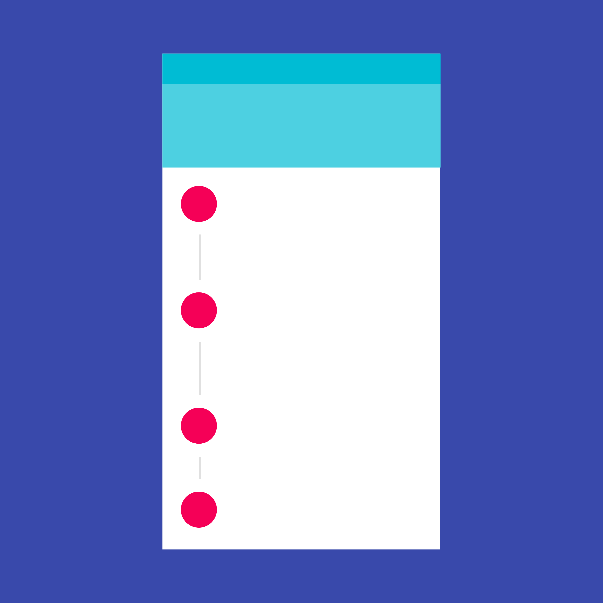

Steppers convey progress through numbered steps.
Steppers display progress through a sequence of logical and numbered steps. They may also be used for navigation.
Steppers may display a transient feedback message after a step is saved.
Types of Steps
Editable
Non-editable
Mobile
Optional
Types of Steppers
Horizontal
Vertical
Linear
Non-linear
